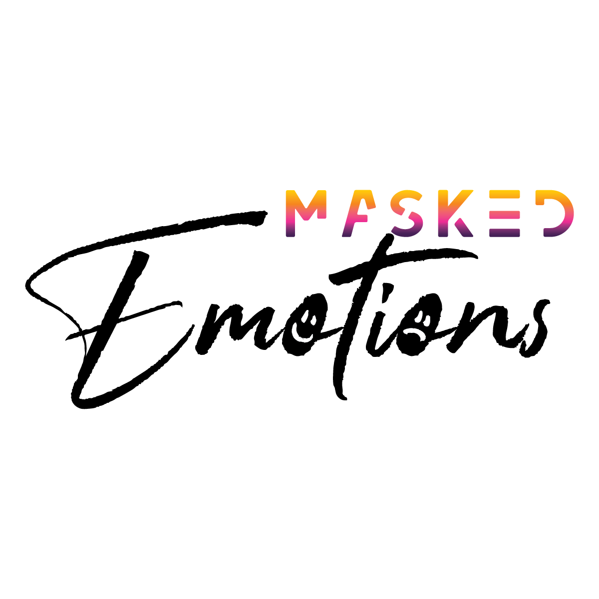
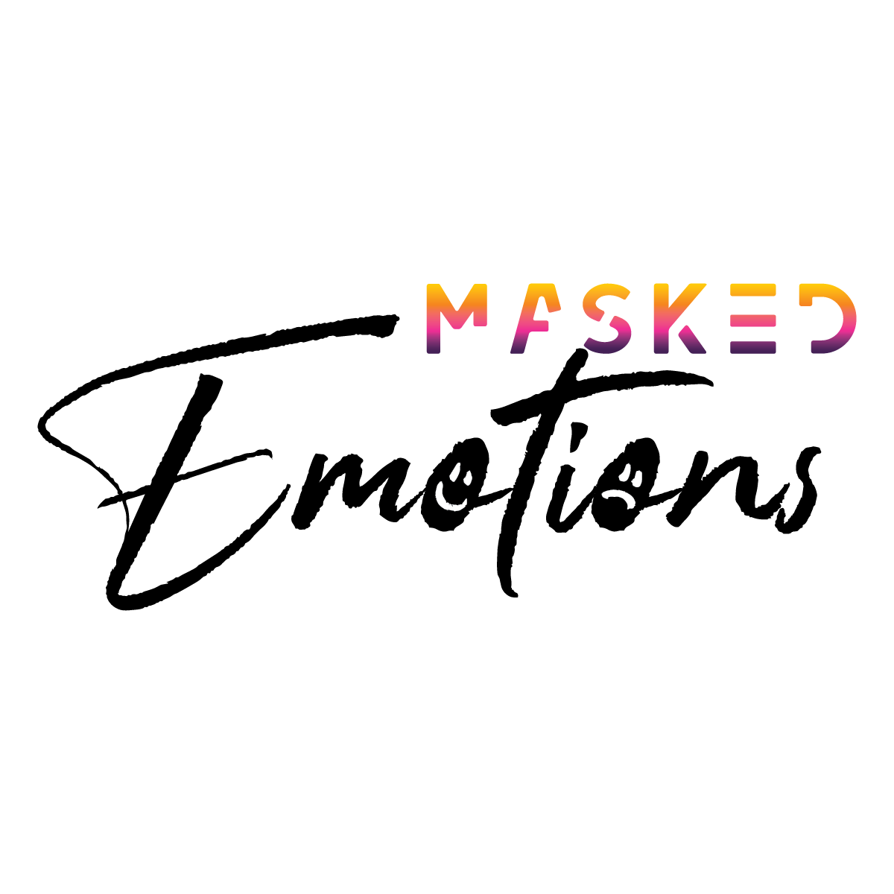
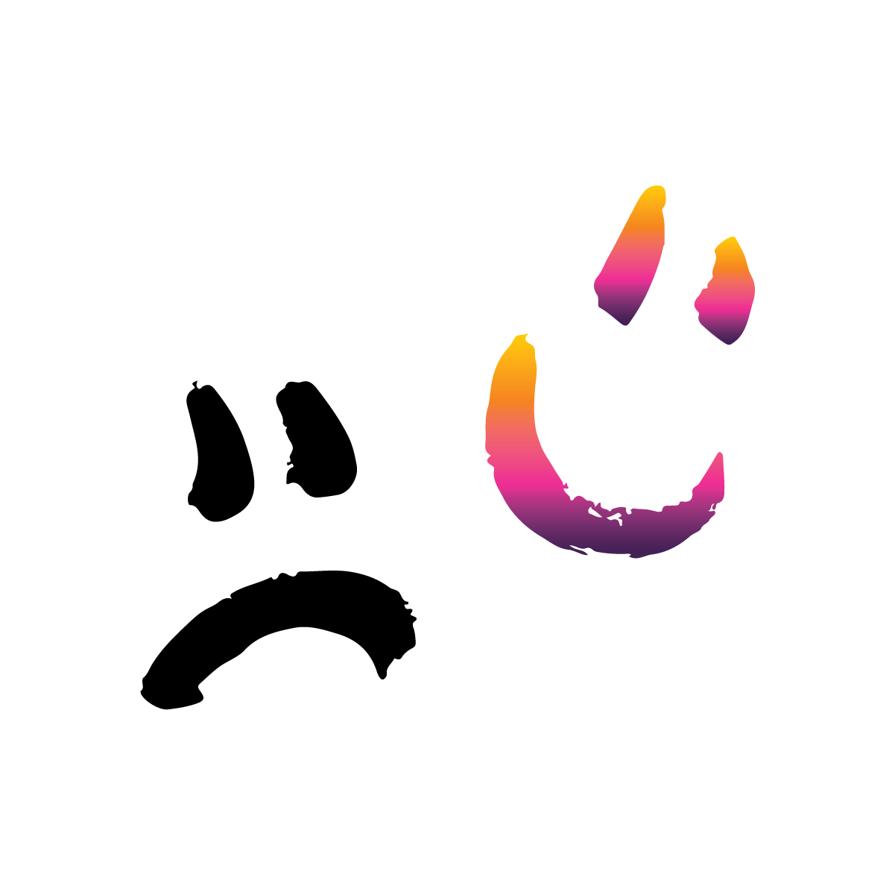
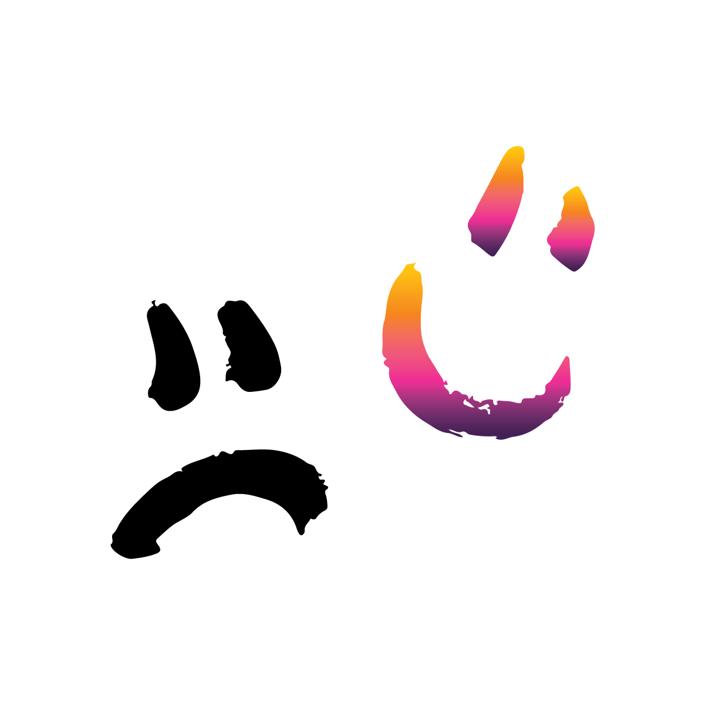

UNLUCKY MADMAN TYPE SPECIMEN
Typeface Design
April 2019
Illustrator, Glyphs and Indesign
Unlucky Madman was a group collaborative typeface. The letterforms were created for a sans serif font inspired by both the art deco period and film noir. The font consists of both uppercase and lower case letters, numbers and a handful of punctuation. Working with the spacing and kerning for each letterform made sure that this font could be used in any program or project in the future. The postcards were to display and advertise the font and the way it could be used. Keeping it within the art deco style made sure the collection felt cohesive. The font can be added to any program on computers and works well for any project that is styled around the Art Deco period.
EDITORIAL ILLUSTRATION
Illustration
November 2019
Illustrator, Photoshop and Procreate
This piece was made to visualize an article posted by Huffington Post about how A.I. is developing in stronger and smarter ways, such as being able to solve Rubik’s Cubes on their own. The colours are connected throughout the entire piece by using the Rubik’s Cube colours on the robot’s wires, indicating that each wire helps when searching for that colour to solve the puzzle. The background is a clean a simple circuit board pattern that shows all of the work and coding that went into creating the A.I. The illustration that was created to work alongside the article written describes everything through imagery, colours, and storytelling.
OUR DEER FAMILY CORPORATE BRANDING
Corporate Branding
April 2019
Illustrator, Photoshop and Indesign
Our Deer Family is a non-profit organization that cares for and provides shelter to deer that cannot be released back into the wild. This could be because they are too injured or weak, or they have lived in captivity for too long that they would not survive in the wild. The colour palette used on the logo and the stationary give the pieces a natural feeling; with everything being printed on recycled or seed paper. The logo and the buttons incorporate a deer family which gives the feeling of love and safety. This feeling is carried through the pieces to show the companies core values to visitors. The branding shows off the companies core values though their style, colour choice, and type of paper.
ATTACTICS APP/LOGO
App Wireframes and Logo
April 2019
Illustrator and Photoshop
Attactics is an app designed to help people know the signs of a heart attack or stroke and what to do if you are are having one. Within the settings, you can create a profile and list the risks that apply to you. Once set, you can learn about what to avoid or what needs to be changed in your lifestyle to lower the risk of a heart attack. By connecting to your smartwatch it can work with your heart rate and send you notifications when you need to rest. There is also an emergency page that will send your location and all your info to paramedics immediately if you need help right away. This app not only helps and informs users about heart attacks and strokes, but can be used daily to make sure you are healthy.
 

 

MASKED EMOTIONS
Social Media Advertising/ Augmented Reality
April 2020
Illustrator, Photoshop, Artivive and InDesign
These campaign posts show the negative sides of social media and how it can affect our mental health daily. Each piece shows a different side of mental illness including anxiety, depression, and social isolation. The pieces can be viewed either as posters or posts on Instagram. When scanned with a phone or a tablet the pieces will come to life and will have a 3D effect, almost as if it would pop out of your screen. People viewing this will see how people hide their true emotions online and the differences between fantasy and reality. This project shows a side of social media that not everyone is aware of and educates them on how to get the help they may need.


PETER PAN BOOK
Book Design
March 2019
Illustrator, Indesign and Photoshop
The cover for the book Peter Pan is based on the island Neverland where the characters go and meet the lost boys and other mythical creatures. Using the light green on top of the blue was to create depth and feel as if you are going deeper into the island. The use of the colours is to have the readers feel invited to join the characters on their journey yet also curious to know what is hiding in the darkness beyond the leaves. The book cover shows off an important scene in the story in an eye-catching way to draw in new readers.

BLUE STAR MENU DESIGN
Menu Design
April 2018
Illustrator and Photoshop
This job was to redesign the menu used at a restaurant in Welland, Ontario called the Blue Star. The top border of the menu is a close-up star pattern to tie in the name of the restaurant without taking too much attention away from the information. With the use of white space and the clean black boxes and lines, it makes it much easier to read and take in the information. At the bottom of the menu, it talks about the restaurant’s history and the couple who started it all 70 years ago. This menu organizes their food and beverages in a way that is simple to follow and easy to navigate through for any age.
UNDERGROUND MAGAZINE
Editorial Design
April 2019
Illustrator, Indesign and Photoshop
This magazine is focused on Canadian alternative music and the bands that are changing the sound style in the 21st century. Articles include Q and A’s with the bands, interviews, upcoming concerts in Ontario and smaller bands that deserve more recognition. The ideas all began with the magazine name Underground. The name came from the ’60s and was used until the early 2000s for bands that didn’t want to become mainstream or overplayed. With that description, the magazine was styled with a rustic black and white look with a pop of red. The magazine advertises and educates readers on Canadian alternative music while drawing in new readers with an in-depth look into the art process of creating albums.


AIR CANADA ADVERTISMENT
Illustration/ Design
December 2019
Illustrator, Photoshop and Procreate
This piece was created to advertise flights form Air Canada. The job was to create a poster that would advertise an Air Canada flight to a destination of our choice. As shown, the location that was chosen was England because of their worldly known landmarks and nightlife. Studying their culture and the city helped choose the icons and style used on the poster. Using their flag colours to create the vectors over a black background created strong focal points and great contrast. Overlapping the buildings added a nighttime firework feeling to the advertisement. The advertisement perfectly illustrates the London nightlife and its landmarks.

ATTACTICS AWARENESS POSTER
Poster Design
April 2019
Illustrator and Photoshop
This series of posters were created to advertise the app I created called Attactics. Each poster visualizes one of the symptoms you might feel when having a heart attack or stroke. The design visualizes the spreading of pain that can occur when dealing with a heart attack. The explanation at the bottom goes into detail about what you should be looking for if you feel this type of pain and what should be done about it. Every poster can be scanned with your phone and take you to a link to download the app Attactics. These posters both educate the viewers and advertises the app Attactics that will help people that have a history with Heart Attacks.
NIAGARA COLLEGE BIKE JERSEYS
Jersey Design
August 2019
Illustrator, Optitext, Photography
Bike jerseys were designed for Niagara College’s Bike team who signed up to do The Big Move Cancer Ride in June 2019. The college’s logo and the maple leaf was placed on the sleeves, front side and backside of the jersey to clearly identify the college team to riders and spectators alike. Niagara College’s corporate colours are used to demonstrate brand consistency and instill school pride. Each shirt could be personalized with a name on the sleeve under the college logo. The jersey design shows off school spirit at this public event yet is versatile enough to wear during any ride or race.